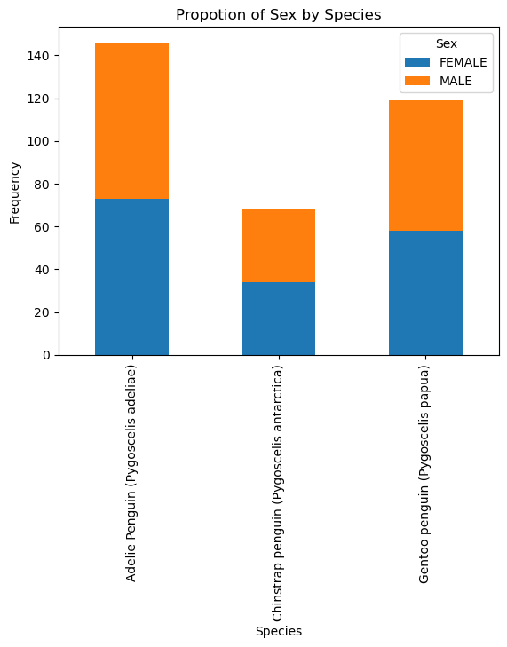
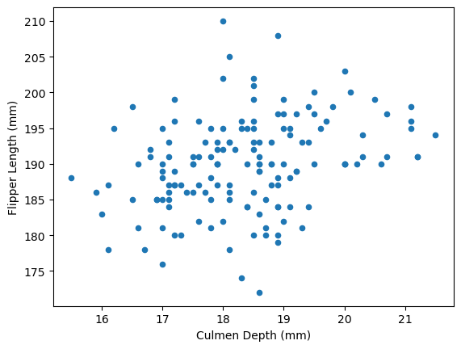
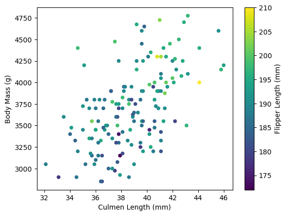

import pandas as pd
from plotly import __version__
import plotly.graph_objects as go
from plotly.offline import init_notebook_mode, iplot
url = "https://raw.githubusercontent.com/pic16b-ucla/24W/main/datasets/palmer_penguins.csv"
penguins = pd.read_csv(url)Leading 1
Subheading 1
this is normal text
#penguins.head()adelie_df = penguins[penguins["Species"] == "Adelie Penguin (Pygoscelis adeliae)"].reset_index(drop=True)
adelie_df.dropna()| studyName | Sample Number | Species | Region | Island | Stage | Individual ID | Clutch Completion | Date Egg | Culmen Length (mm) | Culmen Depth (mm) | Flipper Length (mm) | Body Mass (g) | Sex | Delta 15 N (o/oo) | Delta 13 C (o/oo) | Comments | |
|---|---|---|---|---|---|---|---|---|---|---|---|---|---|---|---|---|---|
| 6 | PAL0708 | 7 | Adelie Penguin (Pygoscelis adeliae) | Anvers | Torgersen | Adult, 1 Egg Stage | N4A1 | No | 11/15/07 | 38.9 | 17.8 | 181.0 | 3625.0 | FEMALE | 9.18718 | -25.21799 | Nest never observed with full clutch. |
| 7 | PAL0708 | 8 | Adelie Penguin (Pygoscelis adeliae) | Anvers | Torgersen | Adult, 1 Egg Stage | N4A2 | No | 11/15/07 | 39.2 | 19.6 | 195.0 | 4675.0 | MALE | 9.46060 | -24.89958 | Nest never observed with full clutch. |
| 28 | PAL0708 | 29 | Adelie Penguin (Pygoscelis adeliae) | Anvers | Biscoe | Adult, 1 Egg Stage | N18A1 | No | 11/10/07 | 37.9 | 18.6 | 172.0 | 3150.0 | FEMALE | 8.38404 | -25.19837 | Nest never observed with full clutch. |
| 29 | PAL0708 | 30 | Adelie Penguin (Pygoscelis adeliae) | Anvers | Biscoe | Adult, 1 Egg Stage | N18A2 | No | 11/10/07 | 40.5 | 18.9 | 180.0 | 3950.0 | MALE | 8.90027 | -25.11609 | Nest never observed with full clutch. |
| 38 | PAL0708 | 39 | Adelie Penguin (Pygoscelis adeliae) | Anvers | Dream | Adult, 1 Egg Stage | N25A1 | No | 11/13/07 | 37.6 | 19.3 | 181.0 | 3300.0 | FEMALE | 9.41131 | -25.04169 | Nest never observed with full clutch. |
| 68 | PAL0809 | 69 | Adelie Penguin (Pygoscelis adeliae) | Anvers | Torgersen | Adult, 1 Egg Stage | N32A1 | No | 11/11/08 | 35.9 | 16.6 | 190.0 | 3050.0 | FEMALE | 8.47781 | -26.07821 | Nest never observed with full clutch. |
| 69 | PAL0809 | 70 | Adelie Penguin (Pygoscelis adeliae) | Anvers | Torgersen | Adult, 1 Egg Stage | N32A2 | No | 11/11/08 | 41.8 | 19.4 | 198.0 | 4450.0 | MALE | 8.86853 | -26.06209 | Nest never observed with full clutch. |
| 120 | PAL0910 | 121 | Adelie Penguin (Pygoscelis adeliae) | Anvers | Torgersen | Adult, 1 Egg Stage | N66A1 | No | 11/17/09 | 36.2 | 17.2 | 187.0 | 3150.0 | FEMALE | 9.04296 | -26.19444 | Nest never observed with full clutch. |
| 121 | PAL0910 | 122 | Adelie Penguin (Pygoscelis adeliae) | Anvers | Torgersen | Adult, 1 Egg Stage | N66A2 | No | 11/17/09 | 37.7 | 19.8 | 198.0 | 3500.0 | MALE | 9.11066 | -26.42563 | Nest never observed with full clutch. |
| 130 | PAL0910 | 131 | Adelie Penguin (Pygoscelis adeliae) | Anvers | Torgersen | Adult, 1 Egg Stage | N73A1 | No | 11/23/09 | 38.5 | 17.9 | 190.0 | 3325.0 | FEMALE | 8.98460 | -25.57956 | Nest never observed with full clutch. |
| 131 | PAL0910 | 132 | Adelie Penguin (Pygoscelis adeliae) | Anvers | Torgersen | Adult, 1 Egg Stage | N73A2 | No | 11/23/09 | 43.1 | 19.2 | 197.0 | 3500.0 | MALE | 8.86495 | -26.13960 | Nest never observed with full clutch. |
| 138 | PAL0910 | 139 | Adelie Penguin (Pygoscelis adeliae) | Anvers | Dream | Adult, 1 Egg Stage | N79A1 | No | 11/16/09 | 37.0 | 16.5 | 185.0 | 3400.0 | FEMALE | 8.61651 | -26.07021 | Nest never observed with full clutch. |
| 139 | PAL0910 | 140 | Adelie Penguin (Pygoscelis adeliae) | Anvers | Dream | Adult, 1 Egg Stage | N79A2 | No | 11/16/09 | 39.7 | 17.9 | 193.0 | 4250.0 | MALE | 9.25769 | -25.88798 | Nest never observed with full clutch. |
#adelie_df.head()import pandas as pd
from plotly import __version__
import plotly.graph_objects as go
from plotly.offline import init_notebook_mode, iplot
url = "https://raw.githubusercontent.com/pic16b-ucla/24W/main/datasets/palmer_penguins.csv"
penguins = pd.read_csv(url)
adelie_df = penguins[penguins["Species"] == "Adelie Penguin (Pygoscelis adeliae)"].reset_index(drop=True)
adelie_df.dropna()
# Culmen Length (mm) vs. Body Mass (g)
trace1 = go.Scatter(
x=adelie_df["Culmen Length (mm)"],
y=adelie_df["Body Mass (g)"],
text=adelie_df["Species"],
mode="markers",
marker=dict(size=10, symbol="circle", line=dict(color="rgb(0,0,0)", width=0.5)),
marker_color="black",
name="Adelie Penguin",
)
data = trace1
layout = dict(
title="<b>Culmen Depth (mm) vs. Body Mass (g)</b>",
showlegend=True,
xaxis=dict(title="Culmen Depth (mm)"),
yaxis=dict(title="Body Mass (g)"),
plot_bgcolor="rgba(0,0,0,0)",
paper_bgcolor="rgba(0,0,0,0)",
)
fig = dict(data=data, layout=layout)
iplot(fig)print(adelie_df.columns)Index(['studyName', 'Sample Number', 'Species', 'Region', 'Island', 'Stage',
'Individual ID', 'Clutch Completion', 'Date Egg', 'Culmen Length (mm)',
'Culmen Depth (mm)', 'Flipper Length (mm)', 'Body Mass (g)', 'Sex',
'Delta 15 N (o/oo)', 'Delta 13 C (o/oo)', 'Comments'],
dtype='object')import matplotlib.pyplot as plt
import pandas as pd
# Group the data by 'species' and 'sex' and get the counts
grouped_data = penguins.groupby(['Species', 'Sex']).size().reset_index(name='count')
grouped_data = grouped_data[grouped_data['Sex'] != "."]
# Pivot the data to have 'species' as rows and 'sex' as columns
pivot_data = grouped_data.pivot(index='Species', columns='Sex', values='count')
# Plot the bar graph
pivot_data.plot(kind='bar', stacked=True)
# Set labels and title
plt.xlabel('Species')
plt.ylabel('Frequency')
plt.title('Propotion of Sex by Species')
# Show the plot
plt.show()
adelie_df.plot.scatter(x="Culmen Depth (mm)", y="Flipper Length (mm)");
ax1 = adelie_df.plot.scatter(x='Culmen Length (mm)', y='Body Mass (g)', c = 'Flipper Length (mm)', colormap='viridis')